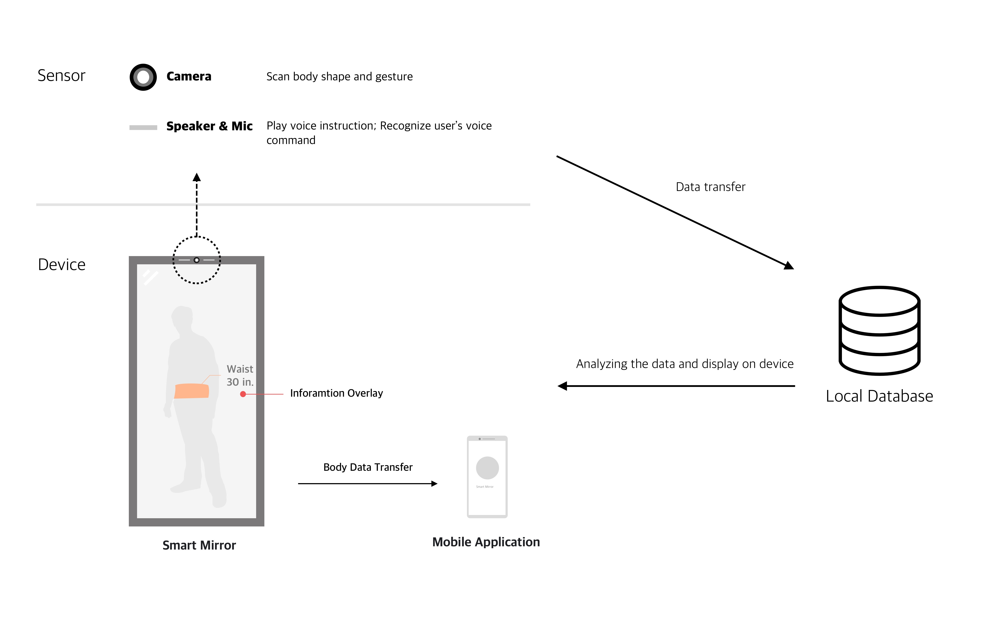

MILESTONE 5
Final Report and Video
Final Product & Value proposition

The smart mirror is a futuristic product that can be realized when 3D dynamic object recognition technology is more mature. The mirror is designed to support people who have the need of knowing if their workout is effective by seeing actual body shape changes during the bodybuilding process.
Motivation
Lack of motivation is a primary reason to stop people from maintaining the workout and diet habits. Through observation, we found that body shape change provides evidence for the effectiveness of workout plan, which turns out to be an important stimulus to keep people motivated.
Key insights
Cultural probe & Interviews
At the very beginning, our primary concern toward this project was whether the project will provoke people’s body anxiety. To better understand people’s perceptions of body shape and determine the user group we could better target to, we want to explore the following research questions through cultural probe:
- How do people in different cultures think of their body shapes?
- What are the ideal body shapes in different cultures?
Once we addressed the above concerns, we asked more research questions through interviews:
- What is people’s goal through workout and diet habits?
- How do people keep track of their workout and diet outcomes?
- When and in what context would they think of their body shapes?
- What behaviors and emotions result from the changes in body shape?
We found that:
- Weight is not ideal for reflecting body conditions or workout progress
- Seeing changes in body shape is motivational and help knowing if the workout has been effective.
-
Pain points regarding current methods of seeing changes in body shapes:
- Hard to see visible changes simply by looking in the mirror (usually takes long notice significant changes and they are not accurate) - Doubt if the workout is effective
- Hard to see certain parts of the body - the back
- Accurately measure and track takes too much time and effort
User enactments
After the prior formative research, we brainstormed design concepts and then designed the specific features for the chosen concept - smart mirror. To evaluate our design direction and proposed features, we conducted user enactments with five users who are all people who work out constantly and aim to change their body shapes. From which we tried to answer the following questions:
- How do users perceive privacy issue of the mirror concept? Do they feel invasive with this device recording their bodies?
- What features in the mirror are most valuable and useful for user?
- What is the right balance between sending necessary push notifications for motivational purpose and avoiding making users feeling annoyed?
- What is the most appropriate and comfortable way of displaying body data that avoid users having adverse feelings towards the product and their bodies?
Here are our study results:
- Privacy is a top priority concern, and they are willing to sacrifice their user experience to maintain privacy. 2 participants mentioned that they were worried about the privacy issue of personal body image (possibly only with underwear) and related data. 1 participant doesn’t want to see his own face in the mirror /prefers his face to be blurred on purpose to protect his identity.
- Interaction Type: People would like to focus on one interaction media through an interaction flow. For them, voice interaction and gesture recognition on the mirror can be an immersive choice, while meanwhile, they would like to use mobile application for complex interactions, such as choosing a specific date, get notifications, and interact with backend data for complex settings and data checking.
- Nature of feedback: Feedback, no matter positive and negative body shape change, should be able to prompt positive emotions and actions.
- Role of Mirror: Users prefer mirrors as it’s a more familiar and immersive approach for them to measure their body shape, review body information and easy-to-use interaction.
Key features
-
Body measurement
The user could do body measurement and view those data from our smart mirror. The mirror has a camera to auto-detect the user’s standing location and gestures and provides the user instructions to meet the requirement for scanning and measuring. The body data includes chest, arm, waist, thigh, and calf.
-
Schedule measurement
When setting up the smart mirror, the user could set the schedule based on their personal needs. The options are varied by the time such as ‘‘once per week’, for users to get reminders and structured comparable data on the process.
-
Historical data compare
The smart mirror has a data system both in the mirror and the accompanying mobile application. After collecting data from scanning and measuring, the system automatically measures the changes between today's data and the historical data. The comparison results display both on the mirror screen and the mobile app and are able to zoom in to specific areas of the body shape.
-
Multi-modality operations
-
Accompanying mobile app
The mobile app has the 3D mesh body shape of the real-time user displayed on the home screen, with a backup system of all historical data. The user uses the mobile app to compare data from any time period and get reminders to measure their bodies.
-
Gesture recognition
The smart mirror recognizes the users’ real-time gestures and gives instructions to adjust location and gestures while scanning and system measuring.
-
Voice command
The users communicate with the mirror by voice command. All the instructions on setup and further measuring are given by voice command. For example, users follow the voice command to adjust standing location and gestures and communicate with the voice command to set up the measurement schedule.
-
Accompanying mobile app
Videon
Experience prototype and results
We basically prototype every feature of our products including measure body shape, schedule measurement, compare historical data. Due to technical constraints and limitations, we cannot implement the body track and real digital display in the mirror but we try our best to present the whole experience of the usage of the mirror.
The material we used includes a mirror and a projector. We create user interface images and project them onto the mirror. We control and change the image projected to the mirror to demonstrate the actual interfaces users will go through during the usage. Ultimately, we use google translate to fake the voice instructions that come out from the mirror. Combined with a mobile application prototype, the whole system is controlled by the Wizard of Oz.
Ideal system proposal
Reflection
Limitation and Concerns
- Privacy: Privacy is still a primary barrier for people to use our product. First, currently, for a user to use our product, they have to wear skin-tight bodysuit for the mirror to scan their body. Second, the scanned data will inevitably include users’ sensitive data such as face and body shape.
- Technical feasibility: Currently, we assume that the dynamic body shape recognition technology is mature enough to be able to detect fine body changes and display the changes in real-time when users move. However, the technology hasn’t been there yet.